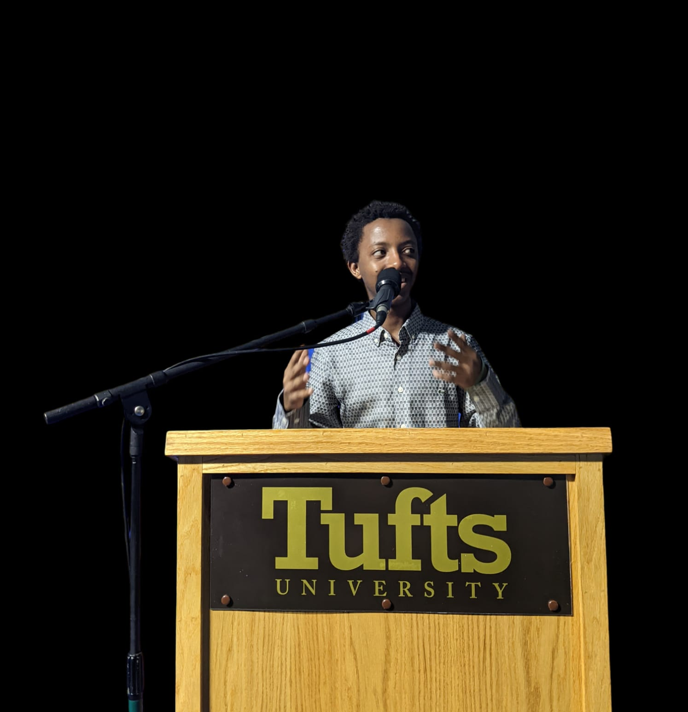

Placide Shema
389 Boston Avenue, Medford +1 8577637057 placide.shema@tufts.edu
linkedin.com/in/placide-shema
EDUCATION
Tufts University Expected dates: Aug 2023 - 2027
Bachelor of Art and Science| Computer Science &Math
- GPA 3.4 outof 4.0
- Relevant Courses: CS11( into to Computer Science, C++),
CS15(Data Structure, C++), Calculus I, Applications in
Engineering, Physics 11, Astronomy (AST 10, Wanderers
Space).
EXPERIENCE
Co-founder & Manager of Jackal Tech Ltd 2021 - Present
Jackal Tech in partnership with ASYV And Afribot Robotic
- A team with committed students in making tech projects as
a solution to a certain problem
- Attended different competitions including Hanga Pitchfest,
and JumboHack, and currently working on the Master app,
Health Service Card, and Service Provider App
- Mainly focus on improving Agriculture, finance, education,
and health services
JumboHack| Tufts Hackathon Feb 18th- Feb 2024
- Created “Global Chat” to provide a dynamic virtual
space for students worldwide to connect, share experiences, and
explore diverse perspectives through discussions on various
topics
- Built this app using Sveltekit, a modern full-stack JS
library similar to Next.js; Google’s Firebase for a
real-time database; Google translate API for chat
translation; and Maplibre for geographic visualization.
MetroSim Project/ C++ in Data Structure March 2024 - April
- Tracking the stations and train by making sure that at
each station the passengers are lined in queues and
well-tracked for getting in and out of the train
- Notifying the number of people on the train, and getting
out of the train by screening them and recording the
station’s name each passenger is going to.
- Made sure that the project was well functioning by
enforcing my Uni-tests for each public function
AWARD AND HONORS
- Won in the CMU CS Academy competition thrice in 2019, 2021,
and 2022. My projects of animations won an international
competition with over 2000 students on the same platform
- Won as the best Artist and Designer of the school clinic
that wanted to new design to be implemented in 2022
- Won the second position in computer typing master at the
school level (ASYV) in 2019
- Awarded as a Multi-Talented student in Bridge2Rwanda Isomo
Academy in 2021
SKILLS
- Computer Skills: Computer programming including Java,
Python, and C++; Computer typing skills; 2Dgames
development; Hardware repairing; Proficient in Microsoft
Word and PowerPoint
- Languages spoken: English, Kinyarwanda, Kirundi
- Leadership Skills: Teamwork and Communication skills,
Customer service skills, Management skills, problem-solving
skills, and time management
- Visual Art, Martial Arts (Karate Shotokan), and Modern Dance